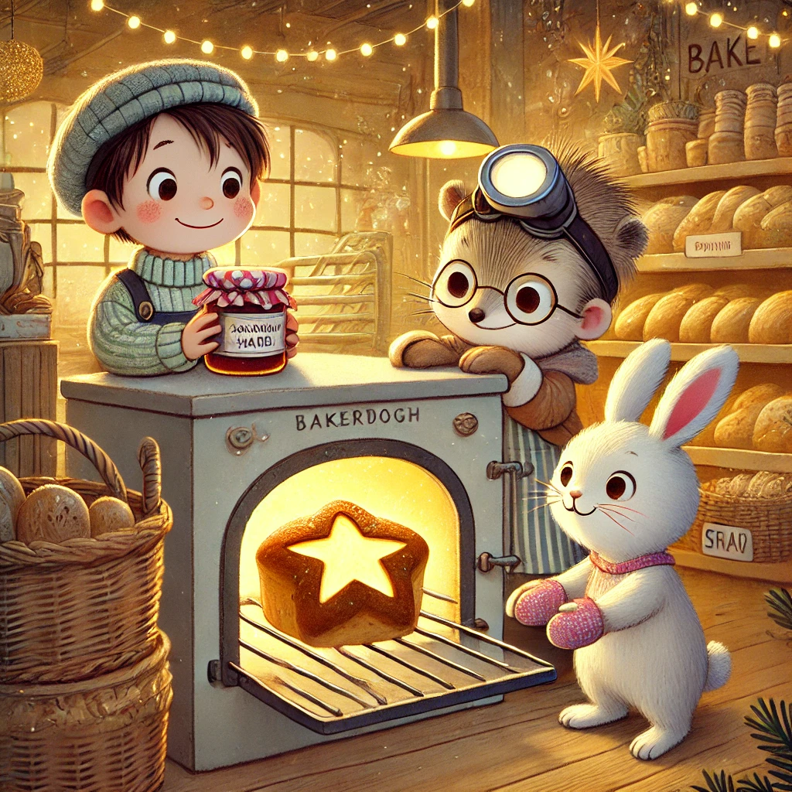

Es war einmal ein Wiesel namens Winnie, das oben auf dem Knabbereienregal eines Supermarkts in Leknes auf den Lofoten wohnte. Eines Tages ging Winnie gemütlich durch die Regale spazieren. Sie liebte es, neue Produkte zu entdecken - vor allem, wenn es sich um Essen handelte.
Ihr Blick war auf die Regalreihen gerichtet und so fiel sie beinahe hin als ihre Pfoten auf einem Stück Papier ausrutschten. Sie hob das Papier auf. Es war eigentlich nur eine halbe Seite: es war in der Mitte durchgerissen. Sauerteig-St., Rezep., Simon H. Und dann noch einige andere Wörter, die Halbwörter waren und keinen Sinn ergaben.
Winnie rollte das Papier zusammen und nahm sich vor, es später Biep und Herrn Hase zu zeigen. Die drei waren sich einig: es musste ein Rezept sein. Allerdings fehlte die zweite Hälfte und es würde unmöglich sein, das oder den Sauerteig-St ohne den Rest des Rezepts erfolgreich zuzubereiten.
So ging die Suche nach dem fehlenden Rezeptteil los. Kreuz und quer durch den Supermarkt suchten sie: unter dem Knabbereienregal, in der Gefriertruhe, hinter dem Käse, zwischen den Nudeln, neben den Karotten. Es war nigendwo zu finden.
Sie wollten gerade aufgeben, als Winnie ein Stück Papier aus der Jackentasche eines Mannes hervorlugen sah. Herr Hase schlich sich vorsichtig heran und zupfte vorsichtig daran. Es segelte auf den Boden und - wie aufregend - es war die halb durchgerissene zweite Hälfte des Rezepts!
"Sauerteig-Stern. Rezept von Simon Härer" stand da. "Ein Sauerteig-Stern", rief Biep aufgeregt. "Was ist ein Sauerteig-Stern?", fragte Winnie ratlos. Herr Hase erklärte ihr, dass nicht jedes Brot mit Hefe gebacken wurde und dass ein Stern aus Brotteig sicherlich sehr weihnachtlich-festlich war. Natürlich beschlossen sie, einen Sauerteig-Stern zu backen.Es muss wohl nicht erwähnt werden, dass Winnie nicht mithalf aber stattdessen sehr ungeduldig durch den ganzen Prozess ging. Herr Hase und Biep formten den schönsten Stern und sie benutzten erneut den Ofen in der Backwarenabteilung. Als der Stern frisch gebacken aus dem Ofen kam, stand Winnie schon mit einem Glas Marmelade bereit. Genießerisch tunkten sie jeweils einen Sternenarm in die süße Masse und feierten ihren Rezeptfund.
